Índice
- Introducción al sistema
- Acceso y login
- Dashboard — panel de control
-
Productos
4.1 Categorías · 4.2 Crear producto · 4.3 Editar · 4.4 Inactivar
-
Stock
5.1 Niveles de stock · 5.2 Registrar movimiento · 5.3 Historial y filtros
-
Ventas
6.1 Ver ventas · 6.2 Nueva venta paso a paso · 6.3 Cancelar venta
-
Compras
7.1 Ver compras · 7.2 Nueva compra · 7.3 Recibir mercadería · 7.4 Cancelar
-
Clientes
8.1 Ver clientes · 8.2 Nuevo cliente · 8.3 Editar e inactivar
-
Proveedores
9.1 Ver proveedores · 9.2 Nuevo proveedor
- Reportes
- Flujo de trabajo recomendado
1. Introducción al sistema
Qué es Pietra Cloud y para qué sirve
Pietra Cloud es un sistema de gestión comercial basado en la nube. Permite administrar el inventario de productos, registrar ventas y compras, gestionar clientes y proveedores, y visualizar el estado del negocio en tiempo real desde cualquier dispositivo con acceso a internet.
¿Qué podés hacer con el sistema?
| Módulo | Funciones principales |
|---|---|
| Dashboard | Ver resumen diario, semanal, mensual y anual de ventas, compras y stock |
| Productos | Administrar el catálogo, categorías, precios y stock inicial |
| Stock | Controlar inventario, registrar entradas/salidas/ajustes y ver historial |
| Ventas | Registrar ventas a clientes, con descuento de stock automático |
| Compras | Registrar órdenes de compra a proveedores y recepciones de mercadería |
| Clientes | Base de datos de clientes con historial |
| Proveedores | Base de datos de proveedores |
| Reportes | Análisis de rentabilidad, productos más vendidos y movimientos |
2. Acceso al sistema
Cómo iniciar sesión
Para acceder al sistema ingresá a la URL del sitio. Si no tenés sesión activa, el sistema te redirige automáticamente a la pantalla de login.
- Ingresá tu nombre de usuario en el campo "Usuario".
- Ingresá tu contraseña en el campo "Contraseña".
- Hacé click en Ingresar.
- Si los datos son correctos, el sistema te lleva al Dashboard automáticamente.
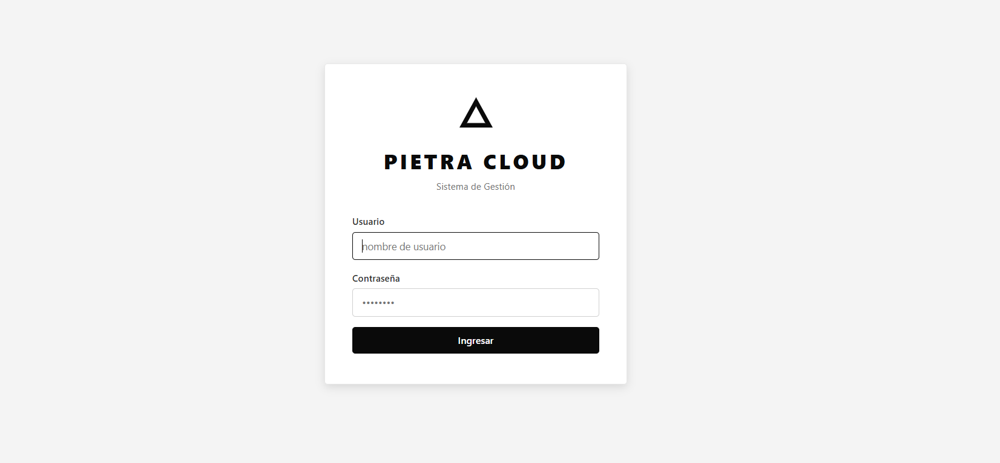
Cerrar sesión
Para cerrar sesión hacé click en el ícono ⏻ que aparece en la esquina inferior izquierda del menú lateral, junto a tu nombre de usuario.
3. Dashboard
Panel de control con resumen del negocio
El Dashboard es la primera pantalla que ves al ingresar. Muestra un resumen completo de la actividad del negocio con datos en tiempo real.
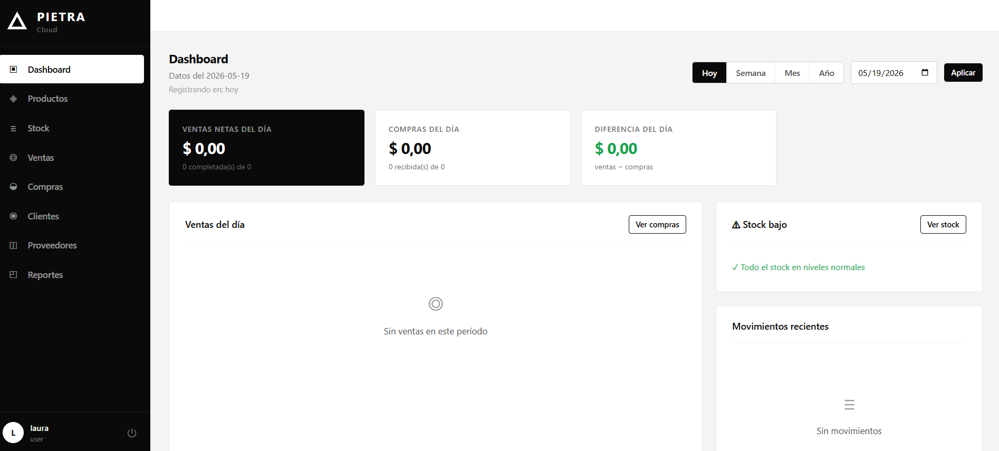
Tarjetas de resumen
| Tarjeta | Qué muestra |
|---|---|
| Ventas netas del día | Total en pesos de ventas completadas en el período seleccionado. Incluye la cantidad de ventas completadas sobre el total. |
| Compras del día | Total en pesos de compras recibidas en el período. Incluye cantidad de órdenes recibidas. |
| Diferencia del día | Ventas menos compras. En verde si es positivo (ganancia), en rojo si es negativo. |
Filtros de período
En la parte superior derecha podés cambiar el período que muestra el dashboard:
- Hoy — datos del día actual
- Semana — últimos 7 días
- Mes — mes en curso
- Año — año en curso
- Fecha personalizada — seleccioná cualquier fecha y hacé click en Aplicar
Panel inferior izquierdo — Ventas del día
Lista las ventas del período seleccionado mostrando el cliente, fecha, monto y estado (Completada / Cancelada). También tiene el botón Ver compras para ir directo al módulo de compras.
Panel inferior derecho — Stock bajo
Muestra los productos que tienen stock igual o menor al mínimo configurado (por defecto: 5 unidades). Si todos los productos tienen stock normal, aparece el mensaje "✓ Todo el stock en niveles normales".
Movimientos recientes
Lista los últimos movimientos de stock registrados (entradas, salidas, ajustes) con fecha, producto y cantidad.
4. Productos
Gestión del catálogo de productos
El módulo de Productos es donde administrás todo tu catálogo. Podés crear, editar, inactivar y buscar productos, además de administrar las categorías.
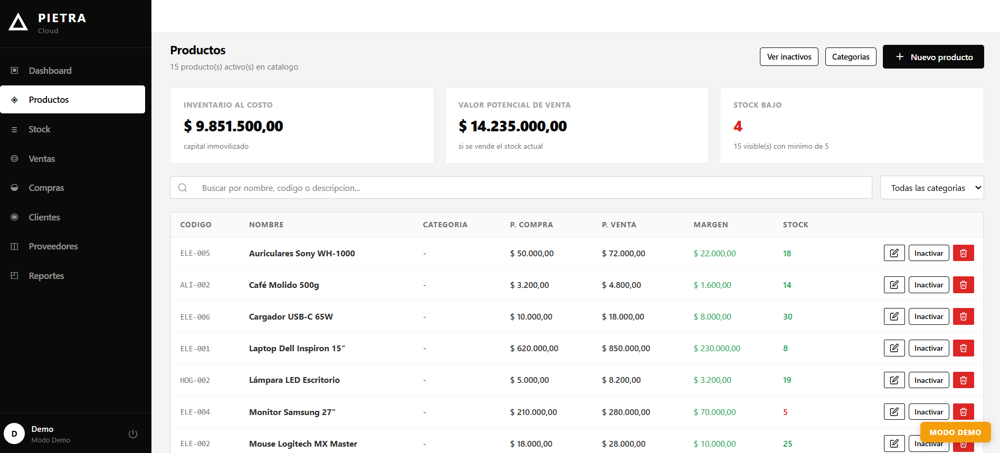
Tarjetas de resumen en Productos
| Indicador | Descripción |
|---|---|
| Inventario al costo | Valor total del stock actual calculado al precio de compra de cada producto |
| Inventario al precio de venta | Valor del stock si se vendiera todo al precio de venta |
| Stock bajo | Cantidad de productos con stock menor o igual al mínimo |
Buscar y filtrar productos
- Buscador — escribí nombre, código o descripción para filtrar en tiempo real
- Filtro por categoría — seleccioná una categoría en el desplegable de la derecha
- Ver inactivos — botón para mostrar u ocultar los productos inactivados
4.1 Categorías
Antes de crear productos, es recomendable crear las categorías para poder organizarlos.
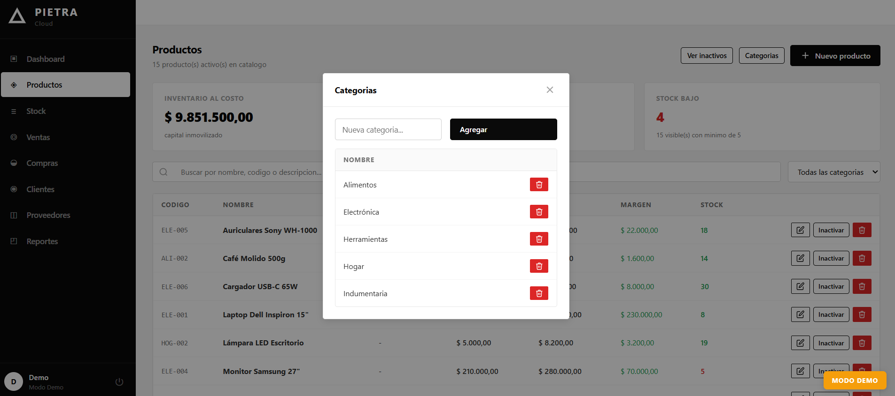
- Hacé click en el botón Categorías en la parte superior derecha de la pantalla de Productos.
- En el campo "Nueva categoría..." escribí el nombre (Ej: Electrónica, Alimentos, Ropa).
- Hacé click en Agregar.
- La categoría aparece en la lista inmediatamente.
4.2 Crear un nuevo producto
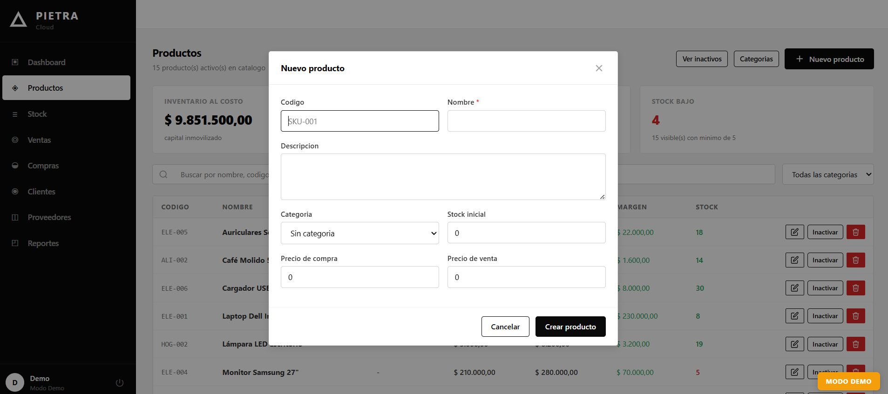
- Hacé click en el botón + Nuevo producto.
- Completá el formulario con los datos del producto.
- Hacé click en Crear producto.
Campos del formulario
| Campo | Requerido | Descripción |
|---|---|---|
| Código | Opcional | Código interno del producto (Ej: SKU-001, ELE-005). Útil para identificación rápida. |
| Nombre | Requerido | Nombre del producto. Máximo 200 caracteres. |
| Descripción | Opcional | Descripción detallada del producto. |
| Categoría | Opcional | Categoría a la que pertenece el producto. |
| Stock inicial | Opcional | Cantidad inicial en inventario. Por defecto 0. |
| Precio de compra | Opcional | Costo al que comprás el producto al proveedor. |
| Precio de venta | Opcional | Precio al que vendés el producto al cliente. |
4.3 Editar un producto
- En el listado, hacé click en el ícono de lápiz ✏ en la fila del producto que querés editar.
- Modificá los campos necesarios.
- Hacé click en Guardar.
4.4 Inactivar y reactivar productos
En lugar de eliminar productos (lo cual perdería el historial de ventas), el sistema permite inactivarlos. Los productos inactivos no aparecen en las búsquedas de ventas ni compras.
- En la fila del producto, hacé click en el botón Inactivar.
- El producto desaparece del listado principal.
- Para volver a verlo, hacé click en Ver inactivos.
- Para reactivarlo, hacé click en Activar en la fila del producto inactivo.
5. Stock
Control de inventario y movimientos
El módulo de Stock tiene dos vistas: Niveles de stock (estado actual del inventario) e Historial de movimientos (todos los cambios registrados).
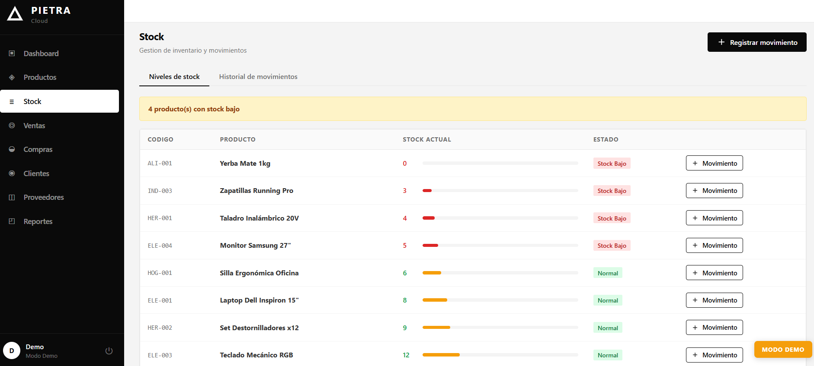
5.1 Niveles de stock
Muestra todos los productos activos ordenados de menor a mayor stock. Incluye una barra visual de estado por producto.
| Estado | Criterio |
|---|---|
| Stock bajo | Stock igual o menor al mínimo (5 unidades por defecto) |
| Normal | Stock por encima del mínimo |
Desde esta vista podés hacer click en + Movimiento en cualquier fila para registrar un movimiento directamente para ese producto.
5.2 Registrar un movimiento de stock
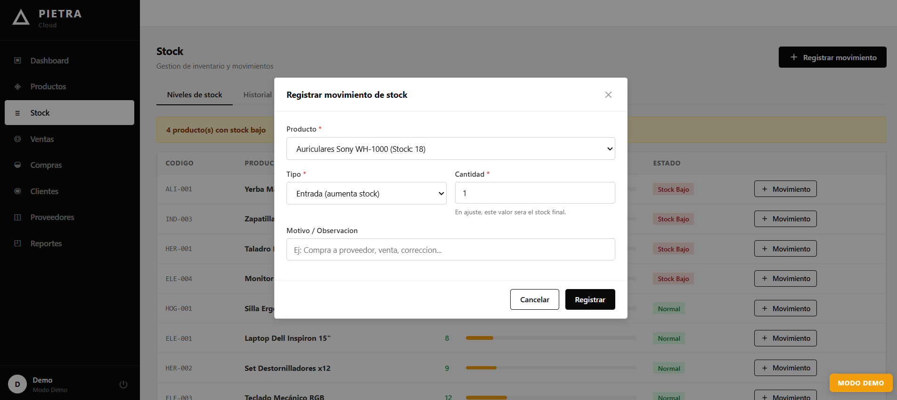
- Hacé click en + Registrar movimiento (botón superior) o en + Movimiento junto a un producto.
- Seleccioná el Producto del desplegable.
- Elegí el Tipo de movimiento.
- Ingresá la Cantidad.
- Opcionalmente escribí un Motivo u observación.
- Hacé click en Registrar.
Tipos de movimiento
| Tipo | Efecto | Cuándo usarlo |
|---|---|---|
| Entrada | Aumenta el stock | Cuando recibís mercadería sin pasar por una orden de compra |
| Salida | Disminuye el stock | Cuando retirás productos del inventario por rotura, pérdida, etc. |
| Ajuste | Define el stock final exacto | Cuando hacés un conteo físico y querés igualar el sistema a la realidad |
5.3 Historial de movimientos
Hacé click en la pestaña Historial de movimientos para ver todos los cambios registrados.
Filtros disponibles
| Filtro | Función |
|---|---|
| Búsqueda | Filtra por nombre de producto o código en tiempo real |
| Desde / Hasta | Muestra movimientos dentro de un rango de fechas específico |
| Tipo | Filtra por tipo: todos, entrada, salida o ajuste |
| ✕ Limpiar fechas | Borra los filtros de fecha y muestra los últimos 200 movimientos |
6. Ventas
Registro y gestión de ventas
El módulo de Ventas permite registrar todas las ventas realizadas. Al confirmar una venta, el stock de cada producto se descuenta automáticamente.
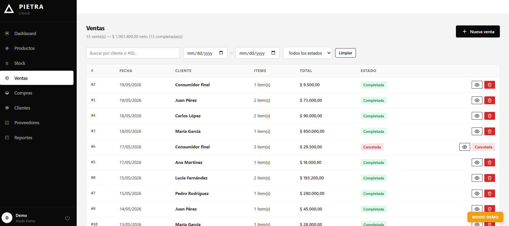
6.1 Ver ventas
El listado muestra todas las ventas con número, fecha, cliente, cantidad de ítems, total y estado. El total al tope de la pantalla acumula todas las ventas completadas.
Filtros disponibles
| Filtro | Función |
|---|---|
| Buscar por cliente | Filtra ventas por nombre de cliente en tiempo real |
| Rango de fechas | Muestra ventas dentro del período seleccionado |
| Estado | Filtra por Completada o Cancelada |
6.2 Nueva venta — paso a paso
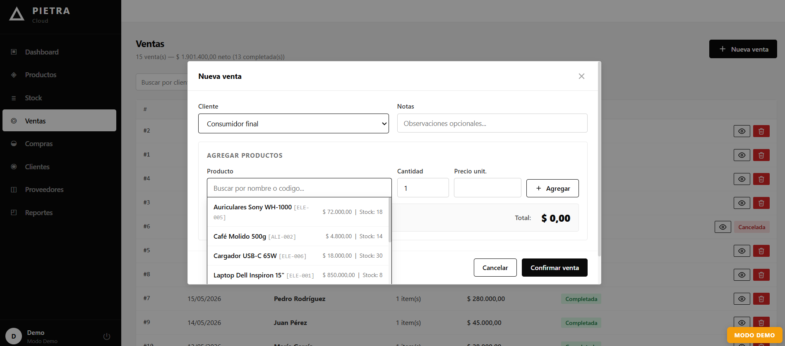
- Hacé click en + Nueva venta.
- Seleccioná el Cliente del desplegable. Si es una venta sin cliente registrado, seleccioná "Consumidor final".
- Opcionalmente escribí una Nota u observación.
- En el campo Producto, escribí el nombre o código para buscar. El sistema muestra sugerencias con precio y stock disponible.
- Seleccioná el producto de la lista.
- Ajustá la Cantidad y verificá el Precio unitario (se completa automáticamente con el precio de venta, pero podés modificarlo).
- Hacé click en + Agregar para sumar el producto al carrito.
- Repetí los pasos 4 a 7 para cada producto adicional.
- Verificá el Total en la esquina inferior derecha del formulario.
- Hacé click en Confirmar venta.
¿Qué pasa al confirmar una venta?
- Se crea el registro de la venta con estado "Completada".
- El stock de cada producto vendido se reduce automáticamente.
- Se registra un movimiento de stock tipo "Salida" por cada producto.
- El Dashboard se actualiza con los nuevos totales.
6.3 Ver detalle y cancelar una venta
- Hacé click en el ícono de ojo 👁 en la fila de la venta para ver el detalle completo con todos los productos.
- Para cancelar, hacé click en el ícono rojo de basura. El sistema pedirá confirmación.
7. Compras
Órdenes de compra y recepción de mercadería
El módulo de Compras administra las órdenes de compra a proveedores. El stock se actualiza al recibir la mercadería, no al crear la orden.
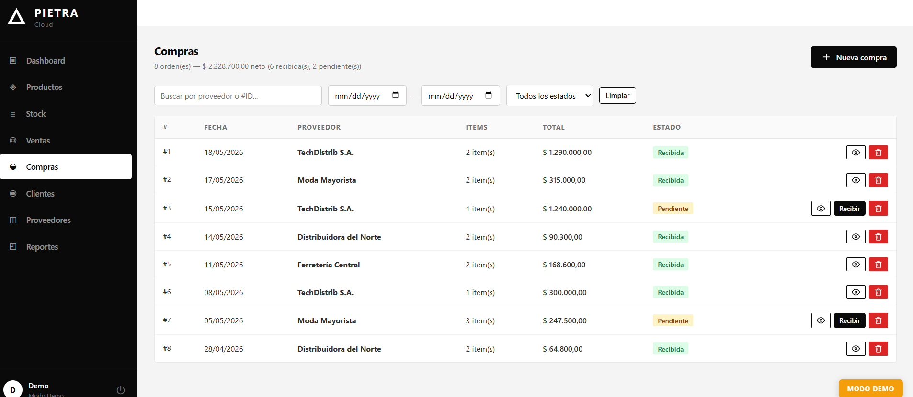
Estados de una compra
| Estado | Significado | Stock |
|---|---|---|
| Pendiente | Orden creada, mercadería aún no llegó | Sin cambios |
| Recibida | Mercadería recibida y cargada al inventario | Stock aumentado |
| Cancelada | Compra cancelada | Sin cambios (o revertido si estaba recibida) |
7.2 Nueva compra
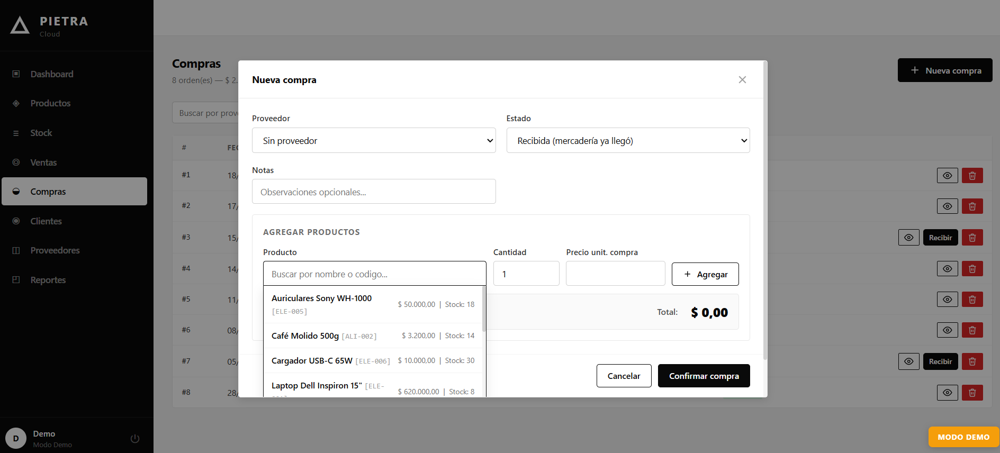
- Hacé click en + Nueva compra.
- Seleccioná el Proveedor (opcional).
- Seleccioná el Estado inicial: "Pendiente" si la mercadería aún no llegó, o "Recibida" si ya la tenés en mano.
- Opcionalmente escribí una Nota.
- Buscá y agregá los productos igual que en ventas: escribí el nombre o código, ajustá cantidad y precio de compra, hacé click en + Agregar.
- Hacé click en Confirmar compra.
7.3 Recibir mercadería
- En el listado de compras, buscá la orden con estado "Pendiente".
- Hacé click en el botón Recibir.
- El sistema actualiza el estado a "Recibida" y suma el stock de cada producto al inventario.
7.4 Cancelar una compra
Hacé click en el ícono rojo de basura en la fila de la compra. Si la compra estaba en estado "Recibida", el sistema revertirá el stock automáticamente.
8. Clientes
Base de datos de clientes
El módulo de Clientes te permite mantener un registro de tus clientes para asociarlos a las ventas y consultar su historial.
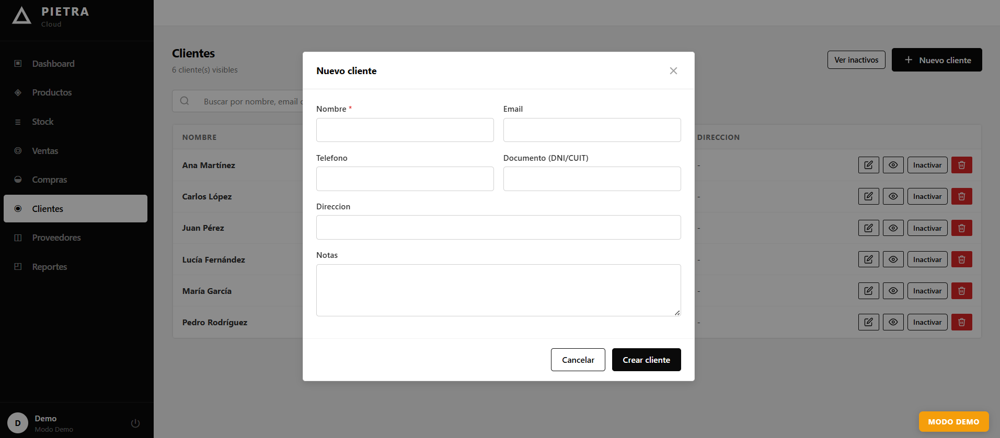
8.2 Crear un nuevo cliente
- Hacé click en + Nuevo cliente.
- Completá el formulario.
- Hacé click en Crear cliente.
| Campo | Requerido | Descripción |
|---|---|---|
| Nombre | Requerido | Nombre completo o razón social del cliente |
| Opcional | Correo electrónico del cliente | |
| Teléfono | Opcional | Número de contacto |
| Documento (DNI/CUIT) | Opcional | Identificación fiscal |
| Dirección | Opcional | Domicilio del cliente |
| Notas | Opcional | Observaciones internas sobre el cliente |
Buscar clientes
El buscador en la parte superior filtra en tiempo real por nombre, email o documento.
8.3 Editar e inactivar
- ✏ Editar — modifica los datos del cliente
- 👁 Ver detalle — muestra información completa del cliente
- Inactivar — oculta el cliente del listado y de los desplegables de ventas
- 🗑 Eliminar — elimina definitivamente (no recomendado si tiene ventas asociadas)
9. Proveedores
Base de datos de proveedores
El módulo de Proveedores funciona de forma similar al de Clientes y permite registrar los datos de tus proveedores para asociarlos a las órdenes de compra.
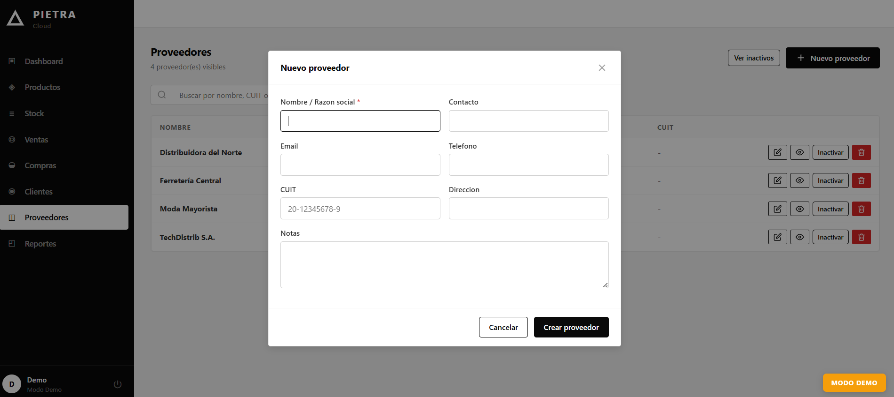
Crear un nuevo proveedor
- Hacé click en + Nuevo proveedor.
- Completá el formulario.
- Hacé click en Crear proveedor.
| Campo | Requerido | Descripción |
|---|---|---|
| Nombre / Razón social | Requerido | Nombre del proveedor o empresa |
| Contacto | Opcional | Nombre de la persona de contacto |
| Opcional | Correo del proveedor | |
| Teléfono | Opcional | Número de contacto |
| CUIT | Opcional | Identificación fiscal (formato: 20-12345678-9) |
| Dirección | Opcional | Domicilio del proveedor |
| Notas | Opcional | Observaciones internas |
10. Reportes
Análisis y estadísticas del negocio
El módulo de Reportes ofrece análisis detallados sobre el rendimiento del negocio, incluyendo rentabilidad, productos más vendidos y evolución de ventas.
Tipos de reportes disponibles
| Reporte | Información que muestra |
|---|---|
| Resumen financiero | Ingresos por ventas, gastos en compras y ganancia neta del período |
| Productos más vendidos | Ranking de productos por cantidad vendida y por monto generado |
| Evolución de ventas | Gráfico de ventas diarias en el período seleccionado |
| Rentabilidad por producto | Margen de ganancia unitario y total por producto |
Filtrar reportes por período
Al igual que el Dashboard, los reportes pueden filtrarse por Hoy, Semana, Mes, Año o un rango de fechas personalizado.
11. Flujo de trabajo recomendado
Orden sugerido para empezar a usar el sistema
Primera vez — configuración inicial
Operación diaria
| Acción | Cómo hacerlo |
|---|---|
| Registrar una venta | Ventas → + Nueva venta → seleccionar cliente y productos → Confirmar venta |
| Registrar una compra | Compras → + Nueva compra → seleccionar proveedor y productos → Confirmar compra |
| Recibir mercadería pendiente | Compras → buscar la orden pendiente → click en Recibir |
| Corregir stock | Stock → + Registrar movimiento → tipo Ajuste → ingresar stock real |
| Ver resumen del día | Dashboard → filtro Hoy |
Flujo completo de una venta
- Verificá que el producto tenga stock suficiente (módulo Stock → Niveles de stock).
- Andá a Ventas → + Nueva venta.
- Seleccioná el cliente (o "Consumidor final" si no está registrado).
- Buscá y agregá cada producto con su cantidad y precio.
- Verificá el total y hacé click en Confirmar venta.
- El sistema descuenta el stock automáticamente y registra el movimiento.
- La venta aparece en el Dashboard como "Completada".
Flujo completo de una compra
- Cuando hacés un pedido a un proveedor, andá a Compras → + Nueva compra.
- Seleccioná el proveedor y los productos con sus precios de compra.
- Dejá el estado en Pendiente y confirmá la compra.
- Cuando llegue la mercadería, buscá la orden en el listado y hacé click en Recibir.
- El stock se actualiza automáticamente con las cantidades recibidas.
Consejos útiles
Sistema de Gestión Comercial · Versión 1.0
Para soporte técnico contactar al administrador del sistema.